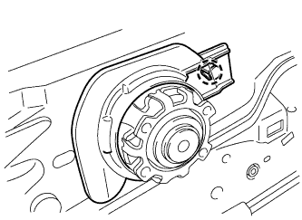
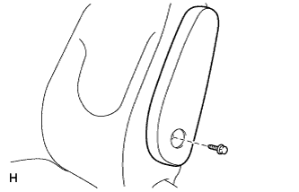

Front sheet Assembly assembly |
| 1. Front seat cushion shield LWR RH installation |
 |
Make the claws and attach the front seat cushion shield LWR RH.
| 2. Front seat cushion shield LWR LH installation |
Make the claws and attach the front seat cushion shield LWR LH.
| 3. Reclining adjuster inside cover RH installation |
The reclining adjustin side cover is mixed.
 |
In the screw, attach the reclining adjuster insidet cover RH.
| 4. Reclining adjuster inside cover LH installation |
The reclining adjustin side cover is mixed.
At the screw, attach the reclining adjuster toein side cover LH.
| 5. Reclining Adjusted Inside Cover RH (RH Seat Yo) Installation |
The reclining adjustin side cover is mixed.
In the screw, attach a reclining adjuster covers RH (RH seat yo).
| 6. Reclining adjuster inside cover LH (RH seat yo) installation |
The reclining adjustin side cover is mixed.
In the screw, attach the reclining adjuster sign side cover LH (RH seat yo).
| 7. Installation of vertical adjuster spacer |
|  |
Make the claws and attach a vertical agasta spacer.
| 8. Front seat cushion cover & pad RH installation |
Set the seat cushion cover and pad on the frame.
Make sure that the J -hook in front of the cushion cover.
 |
Return the panel claws of the cushion frame part of the front seat frame RH.
 |
Use a hogling plier to attach the front seat cushion cover & pad RH with a new hogling.
| 9. Front seat backpad (cover tsuki) RH installation |
 |
Use a hogling plier to attach the front seat cross -cover & pad RH with 5 new hogling.
| 10. Front seat headrest support installation |
 |
Attach 2 front seat headrest support to the seats.
| 11. Long -seat back hook installation |
Make the claws and attach the front seat cross -hook.
Raise the hook and attach the screw.
| 21 |
At the bolt, attach the front seat innabelt Assy RH.
Attach a wire harness clamp.
| 13. Front seat cushion shield Inn RH installation |
Make the claws of the cushion shield.
Attach the front seat cushion shield INN RH with a screw.
| 14. Front seat cushion shield RH installation |
Make the claws of the cushion shield.
Attach the front seat cushion shield RH with a screw.
| 15. Reclining Adjusta Lerry Handle RH installation |
Match the claws and attach the reclining adjuster relley handle RH.
| 16. Vertical adjuster handle RH installation |
Attach a vertical adjuster handle to the sheet adjuster.
Attach two screws.
| 17. Vertical adjuster cover RH installation |
Make the claws and attach the vertical adjuster cover RH.
| 18. Seat armrest Assy C LH installation (armrest -equipped car) |
|  |
At the bolt, attach the seat armrest asy c lh.
| 19. Seat armrest cap No.1 installation (car with armrest) |
Make the claws and attach the No.1 seat armrest cap.
| 20. Lon seat headrest ASSY installation |
Attach the front seat headrest ASSY.
| 21. Lonely seat leg assignment |
With two nuts, attach the front seat leg Assy RH to the front seat Leg cover to the front seat Assy RH.
| 22. RH Seat Front Seat Track Bracket LWR RR RH Installation |
 |
With four nuts, attach the left and right front seat track brackets, LWR RR RH, to the front seat Assy RH.